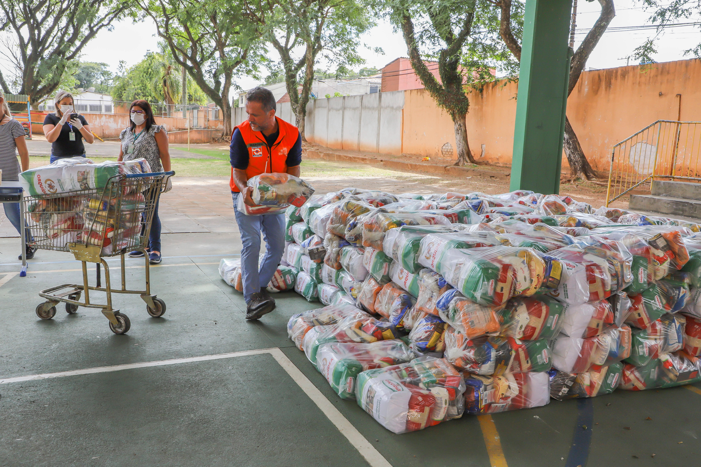
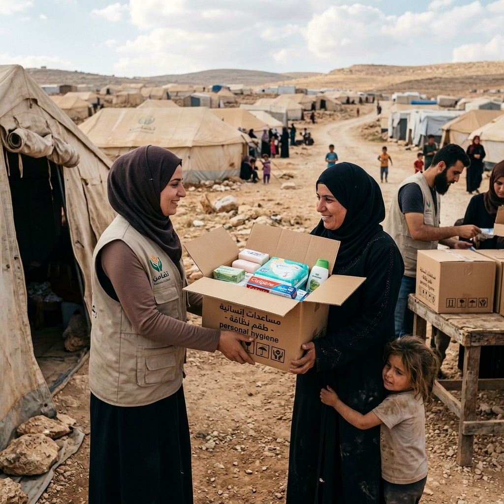
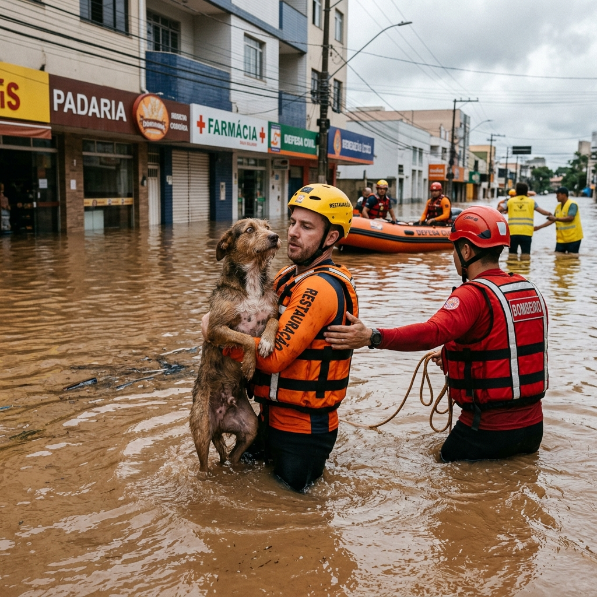
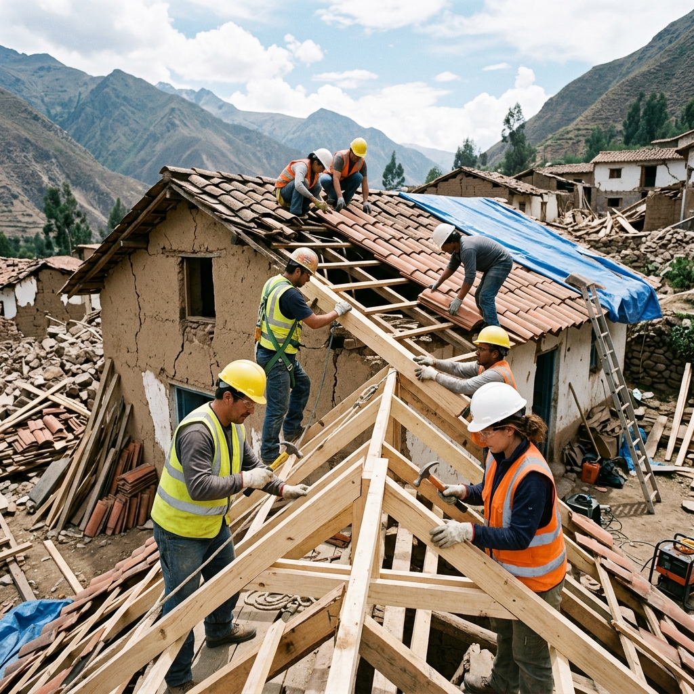

Sua doação se transforma imediatamente em cestas básicas, água potável e itens de higiene para as famílias afetadas pelas fortes chuvas no estado. Acompanhe a entrega em tempo real.
R$ 50 garante água e comida para uma família por 3 dias.
Pagamento criptografado ponta-a-ponta

500 cestas básicas e kits de higiene entregues no centro de abrigo municipal.
Aquisição de 10.000 litros de água potável provenientes das doações via PIX desta manhã.

Voluntários entregaram 200 caixas com itens de higiene pessoal para as famílias no acampamento provisório.

Equipes de voluntários conseguiram resgatar dezenas de animais ilhados após as fortes enchentes.

Iniciamos a segunda fase de reparos estruturais, garantindo abrigo seguro antes do inverno rigoroso.